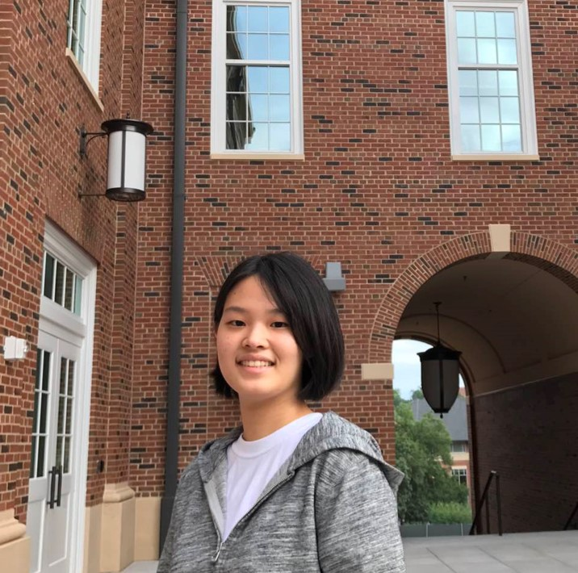

My name is Michelle Seiyoung Kim ,and I am a freshman in University of Georgia. My major is Economics with International Business. I was born in South Korea, and I came to US to study with more diverse opportunities to success. In Korea, I graduated from public elementary and middle schools and graduated from an international high school. For my hobbies, I like to exercise especially badminton and martial arts, and also I like to travel other countries. For food, my favorite foods are Korean barbecue and Chinese food. My favorite restaurant here in Athens is Cali N Tito’s, a Mexican restaurant. Everyone loves it! For my family, I have my parents and two older sisters. Both of my sisters are working at a company, and my dad is doing his own venture business. Family is so important for me, and it has such a big meaning in my life.
I am a
global minded person
who can understand diverse culture and international circumstances. I am really passionate and hard-working student. I have good interpersonal skill, high reliability, and high dependability. Confidence, positive mindset, dedication, and strong mental strength are my key characteristics that could set myself as a unique one. For my career goal, I want to become an economist and use my experience and knowledge to deal with economic condition all around the world especially in undeveloped countries. Volunteering is also a big part in my future goals. I want to share my knowledge with students who are not able to get higher education. It would be great to make a free tutoring website that I can teach the students through videos or other free materials. I also want to make an organization where people can freely discuss about the conflicts and reunification between North Korea and South Korea.
| Red Cross (2011-Present) | Korean Language Society | Student Conduct Council | KCIS Math Mentoring | KCIS Debate Club |
|---|---|---|---|---|
| Fundraising External Affairs Chair (2017-Present), Vice President(2015-2017) | Korean Mentor(2017-Present) | Student Conduct Leader(2017) | Math Mentor(2015) | Vice President(2014) |
|
|
|
|
|
I can speak four languages: Korean (Native); English (Fluent); Mandarin (Elementary); Japanese (Elementary). I am skillful in Microsoft Suite; I got the National Technical Qualification Certificate for Word Processing. For sports, I have black belt in Taekwondo. For my interest, I am really interested in international affairs and issues especially related to economics. I have diverse volunteering experiences. In April, 2016, I volunteered at Community Bomnal Bukhansan Nursing Home. I assisted disabled senior citizens in various ways including feeding them and helping them, as needed, to use the bathroom. In April, 2015, I volunteered at Compassion Korea. I organized and sent letters to children and their sponsors and interpreted letters received by the children and their sponsors. In April, 2014 to January, 2015, I volunteered at the Securities Museum by directing visitors around the museum for tours and providing assistance to those with questions. I also acted as an office assistant and organized exhibition materials.